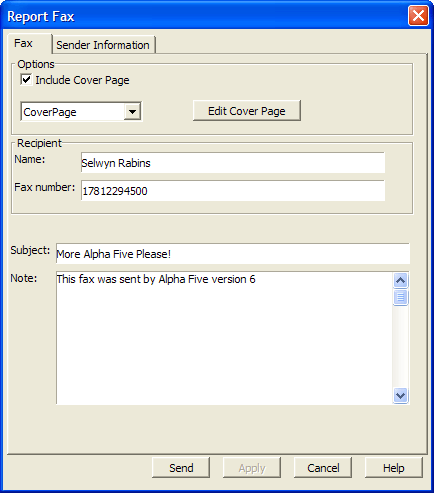
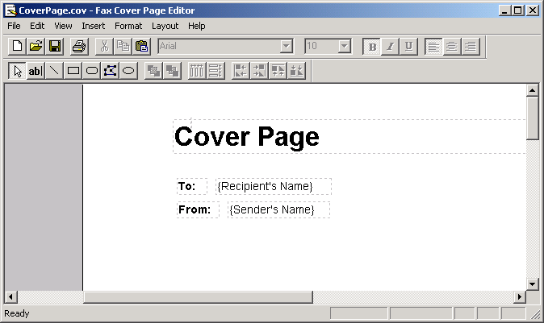
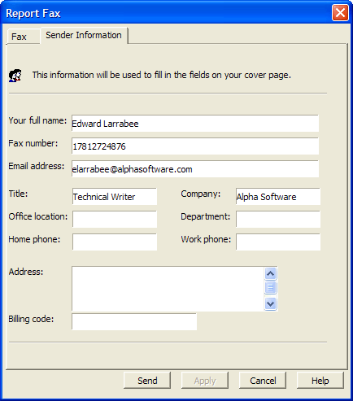

Sending a Fax
Alpha Five supports direct faxing of reports using the built-in Windows Fax Service. Fax messages are queued, managed, and sent in the background by the Windows Fax Queue ( Start > Programs > Accessories > Communications > Fax > Fax Queue ).
To fax a report:
Display the Report tab of the Control Panel.
Right click on the report of interest.
Select Fax... from the right-click menu. The Report Fax dialog appears.
Enter the recipient's Name and Fax Number and other desirable information.

If want to send a cover page, check the Include Cover Page check box and select a cover page from the list box, which contains several
If you want to change a cover page design, click Edit Cover Page to display the Windows Fax Cover Page Editor.
This product allows you to modify, create, delete, and save cover pages. The cover pages can include various fields provided by Alpha Five, including:
Recipient's Name
Recipient's Fax Number
Sender's Name
Sender's Fax Number
Sender's Company
Sender's Address
Sender's Title
Sender's Department
Sender's Office Location
Sender's Home Telephone Number
Sender's Office Telephone Number
Message Note
Message Subject
Message Date/Time Sent
Message Number of Pages
The cover pages are saved in the CoverPages folder under the Alpha Five program folder. [Picture]
![[Picture]](http://support.alphasoftware.com/imagesV8/UG_Fax_editor.gif){kind=link}

Close the Windows Fax Cover Page Editor to return to Alpha Five.
Display the Sender Information tab and fill in desired information.

Click Send to fax your report.
See Also
Supported By
Alpha Five Version 6 and Above